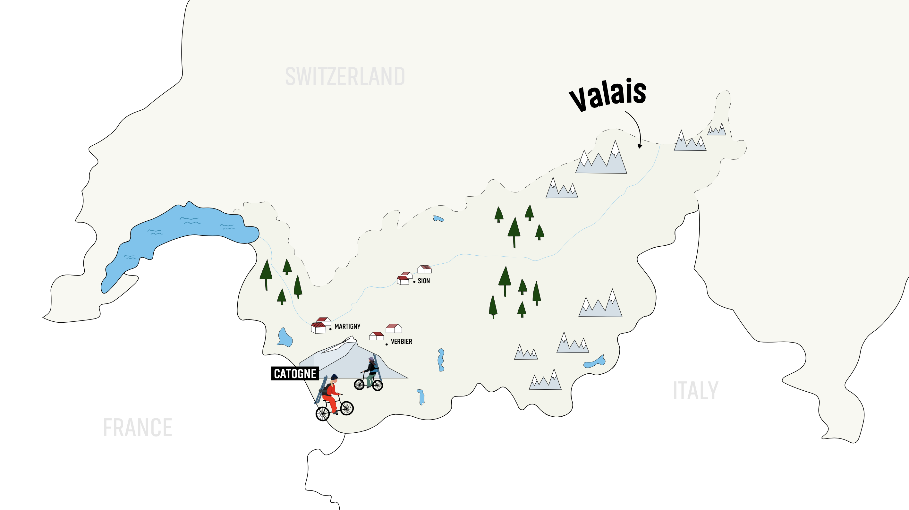
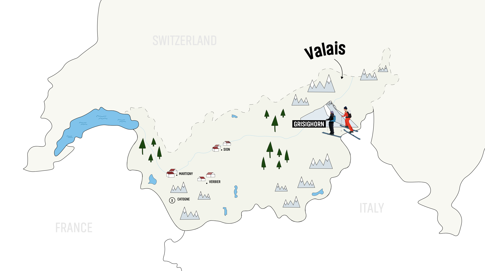
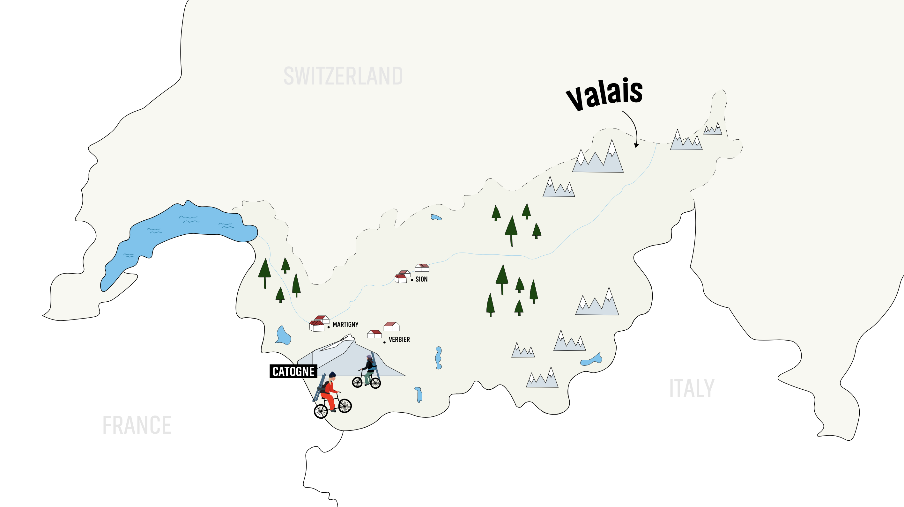
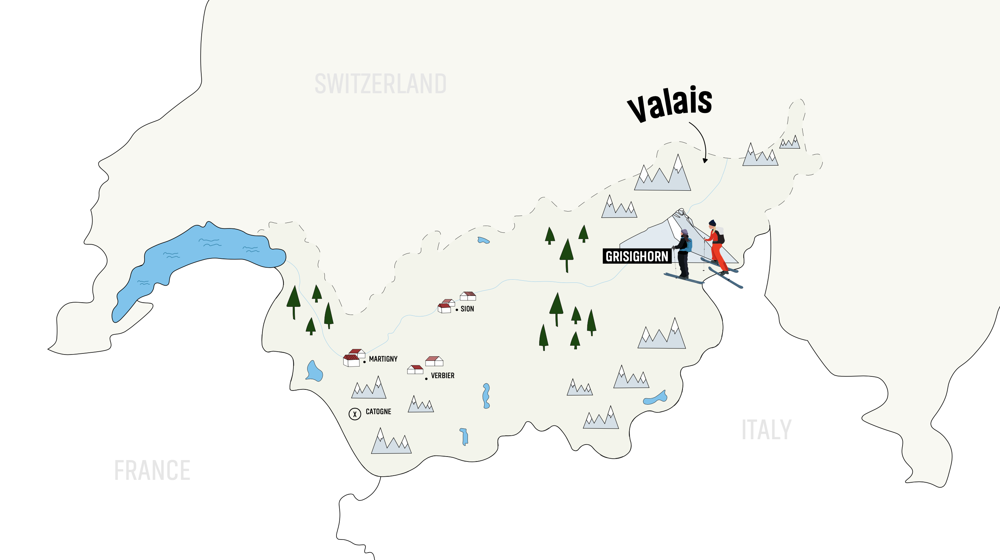

2023 | Graphics
Watch the trailer ↗Creating graphics and posters isn't typically my thing, but I do enjoy playing around in Illustrator from time to time. Fortunately, I have some incredible friends who are involved in exciting stuff, like Sybille Blanjean. When she approached me to design graphics and posters for her new skiing movie, I was excited.
It's remarkable how a combination of time constraints, an affection for friends, and my passion for the mountains motivated me to embark on a rapid learning journey.
'Verso takes the spectators on a journey with Sybille who seeks to push her freeride skills to new heights. Through its experiences, the film explores the evolutionary perspective of the mountain, emphasizing solidarity, trust, and the joy of shared moments. From the risks and resilience to the profound happiness found in the mountains, "Verso" delves into the essence of mountain experiences, emphasizing the importance of connection and the pure joy of being in the mountains.'
When starting this project, I had a foundational understanding of Illustrator and had dabbled in graphic design previously, though nothing like creating a poster. I was yet to understand the principles of composition and the essential rules in poster design.
The creative process involved a significant amount of sketching, experimentation, extensive online research, and numerous iterations. Crafting a poster was challenging, but equally daunting was deciphering the client's vision and ensuring the poster captured the essence of the movie. Understanding and translating these aspects into a compelling poster posed its own unique challenges.
The constraints of aligning with the client's expectations limited my creative freedom, presenting yet another challenge that I had to navigate.
After extensive and ongoing communication with Sybille, we began to find a clear direction for our project. I gained a better grasp of composition, Sybille's vision, and where to strategically place text and logos within the design. The mountains were taking shape, but there were still important decisions to be made.
Below, you can view the completed posters. At this stage, everything came together, and the designs took on a more modern aesthetic, in line with Sybille's preferences. The color palette had been refined, successfully capturing the essence of feeling small amidst the grandeur of the mountains. The composition now resonated perfectly with the overall vision.
With the posters completed, I was tasked with creating maps to showcase all the locations where Sybille (and her friends) had embarked on their climbing adventures in the movie. This involved crafting a total of four maps. Thanks to the color palette and design elements, the process of creating these maps was significantly streamlined and more straightforward.
Below you can see the finalized maps that are shown during the movie.


 


